Graphics 43 graphics, 43 with a caption
Vocabularies and evidence
CodeMeta, Wikidata properties and the evidence the model rests on.

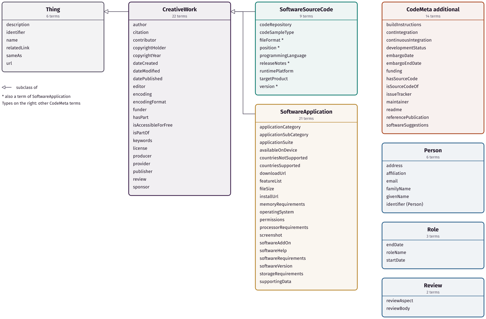
Caption
The 83 CodeMeta terms of the chublets model, grouped by the CodeMeta type they belong to (Thing, CreativeWork, SoftwareSourceCode, SoftwareApplication, and the types for people, roles and reviews). Subclass relations between the types are drawn as open triangles; terms marked with an asterisk are defined on SoftwareSourceCode or SoftwareApplication and shown together.


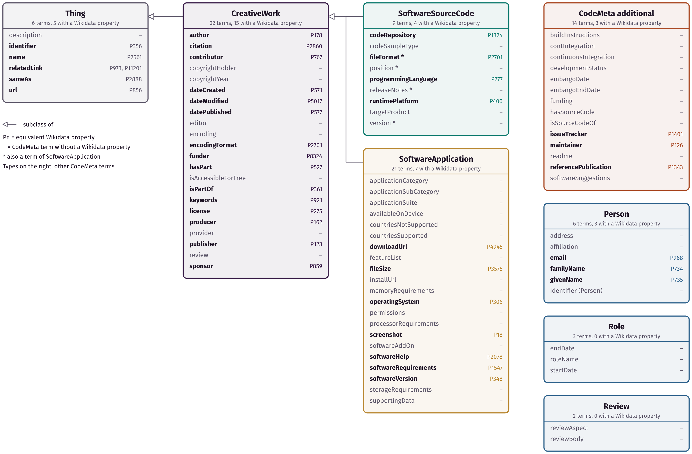
Caption
The same 83 CodeMeta terms with the Wikidata property each one is mapped to in the crosswalk (37 of the properties of the chublets Wikibase are crosswalked). Terms without a Wikidata property are CodeMeta only.


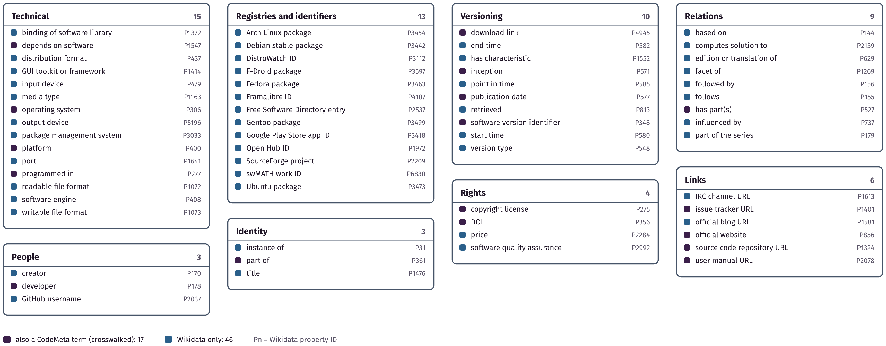
Caption
The 63 Wikidata properties of the software list of WikiProject Informatics in eight groups. Coloured squares are properties that the crosswalk links to a CodeMeta term; the others exist in Wikidata only. Each label is the label of the corresponding property in the chublets Wikibase.


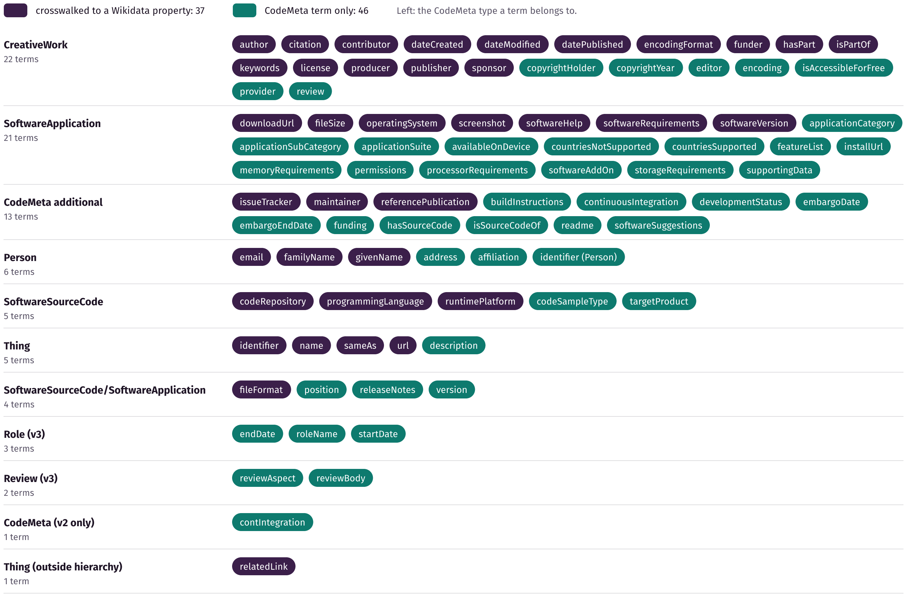
Caption
Coverage of the 83 CodeMeta terms, grouped by the CodeMeta type they belong to. 37 terms are crosswalked to a Wikidata property (purple); 46 terms exist in CodeMeta only (teal). All of them are properties of the chublets Wikibase.


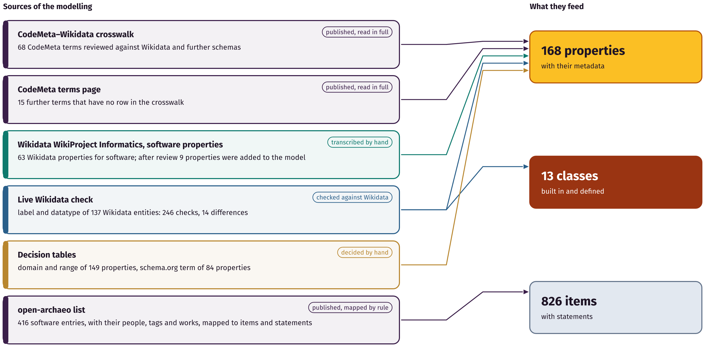
Caption
Sources of the modelling and the parts of the Wikibase they feed: the CodeMeta-Wikidata crosswalk and the CodeMeta terms page, the Wikidata WikiProject list of software properties, a check of labels and datatypes against live Wikidata (246 checks, 14 differences), decision tables for domain, range and schema.org terms (149 properties), and the open-archaeo list (416 software entries). The chip on each source says how it was used.


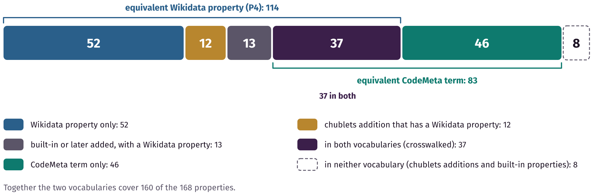
Caption
Overlap of the two source vocabularies among the 168 properties. 114 properties have an equivalent Wikidata property (P4) and 83 have an equivalent CodeMeta term; the 37 crosswalked properties are in both. 46 properties come from CodeMeta only and 52 from Wikidata only; the remaining properties are chublets additions or built-in properties, some of them with a Wikidata property and some in neither vocabulary.

Data model
Classes, properties, statements and how a chublet is stored.

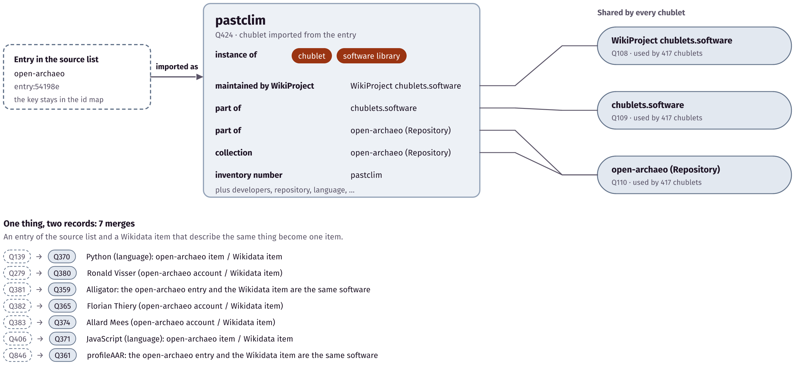
Caption
How a chublet gets its identity, shown for pastclim (416 chublets come from entries of the open-archaeo list). The item is an instance of chublet and ties itself to three items that all chublets share: the WikiProject, the platform and the collection. The key of the source entry stays in the id map. Where an entry of the source list and a Wikidata item describe the same thing, the two records are merged into one item (7 merges).


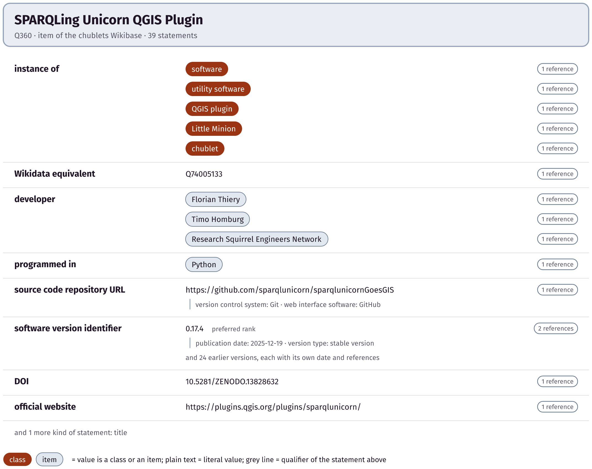
Caption
A chublet as an item of the Wikibase: SPARQLing Unicorn QGIS Plugin (Q360) with 39 statements, of which a selection is shown. Class values are drawn in orange, item values in grey, literals as plain text; qualifiers appear below the statement they qualify, and every statement carries references. The item has 25 statements for software versions, of which the preferred one is shown.


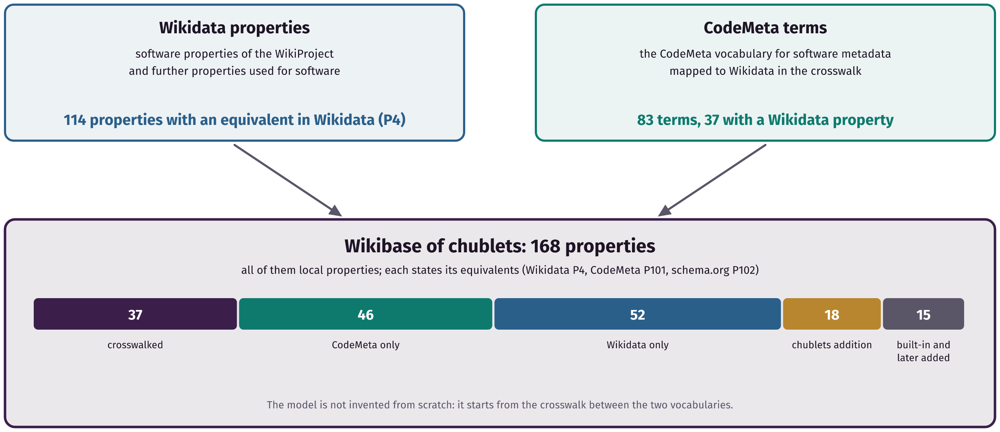
Caption
Where the 168 properties of the chublets Wikibase come from: 114 have an equivalent in Wikidata (P4) and 83 CodeMeta terms are mapped, 37 of them to a Wikidata property. The bar splits the properties by origin: 37 crosswalked, 46 CodeMeta only, 52 Wikidata only, 18 chublets additions and 15 built-in or later added properties.


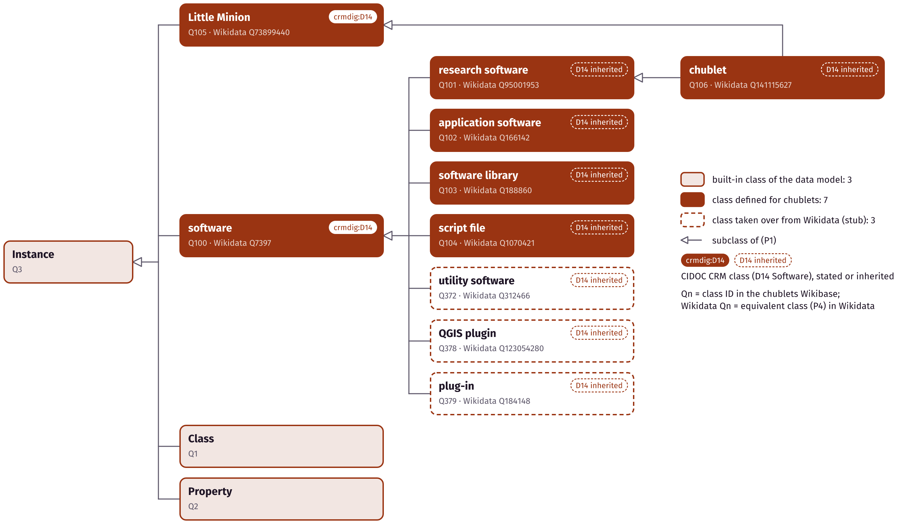
Caption
Class tree of the chublets Wikibase: 13 classes below the root class Instance (Q3). Class (Q1) and Property (Q2) are among the 3 built-in classes of the data model, 7 classes were defined for chublets, and 3 classes were taken over from Wikidata as stubs. Each class shows its Wikidata equivalent (P4). The CIDOC CRM class crmdig:D14 (software) is stated for software (Q100) and Little Minion (Q105) and inherited by the classes below them. Chublet (Q106) has two parents, Little Minion and research software. The hierarchy is the one recorded in the model (P1). Of the 9 parent links whose two classes both have a Wikidata equivalent, 4 are also direct subclass-of (P279) links in Wikidata and 4 hold indirectly, through intermediate classes; one does not exist in Wikidata: chublet is not a subclass of research software there, because that second parent is a chublets decision.


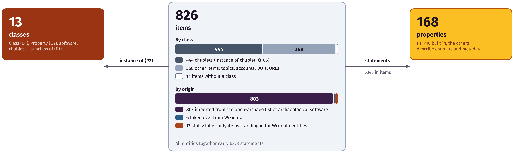
Caption
Contents of the chublets Wikibase: 13 classes, 826 items and 168 properties. Items are instances of classes (P2) and carry statements that use the properties. Of the items, 444 are chublets, 368 are other items (topics, accounts, DOIs, URLs) and 14 have no class. 803 items were imported from the open-archaeo list, 6 were taken over from Wikidata and 17 are stubs for Wikidata entities. In total the entities carry 6873 statements.


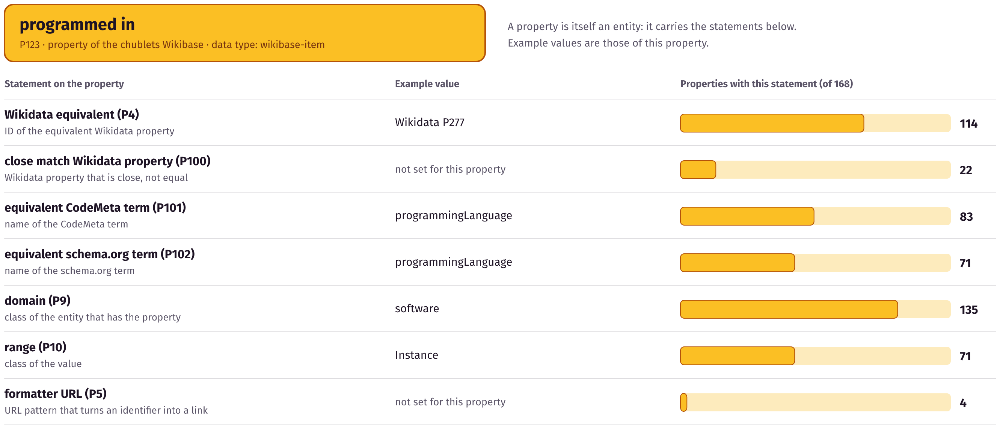
Caption
The metadata layer of a property. A property of the chublets Wikibase is itself an entity and carries statements; the example is the property "programmed in" (P123). Bars show for how many of the 168 properties each statement exists: Wikidata equivalent (P4) 114, close match (P100) 22, equivalent CodeMeta term (P101) 83, equivalent schema.org term (P102) 71, domain (P9) 135, range (P10) 71 and formatter URL (P5) 4.


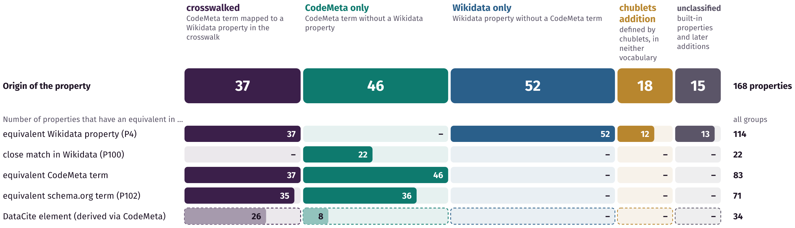
Caption
Origin of the 168 properties of the chublets Wikibase by origin in the CodeMeta-Wikidata crosswalk: 37 crosswalked (a CodeMeta term with a Wikidata twin), 46 CodeMeta only, 52 Wikidata only, 18 chublets additions that are in neither vocabulary, and 15 kernel and review properties that are not part of the crosswalk. The bars below show how many properties of each group carry a Wikidata twin (P4), a loose Wikidata close match (P100), a CodeMeta term, a schema.org term (P102) and a DataCite element. DataCite (dashed) is derived via the CodeMeta hub and is not a published mapping.


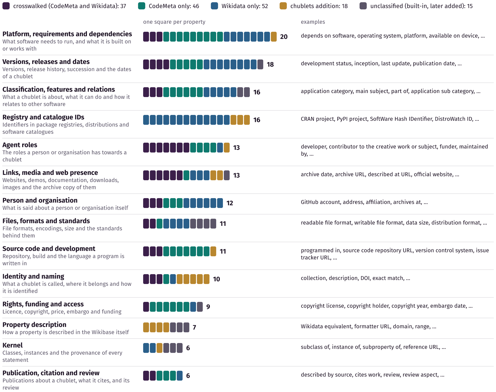
Caption
The 168 properties of the chublets Wikibase in 14 topics. Each square is one property, coloured by its origin in the CodeMeta-Wikidata crosswalk: 37 crosswalked, 46 CodeMeta only, 52 Wikidata only, 18 chublets additions and 15 unclassified built-in and later added properties. The topics were derived from the Wikidata WikiProject Informatics property groups, CodeMeta and schema.org; the examples are the first properties of each topic.


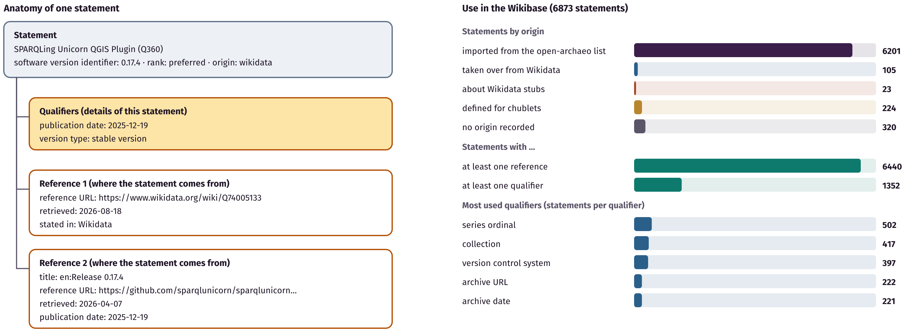
Caption
Provenance of statements. Left: one statement (a version of SPARQLing Unicorn QGIS Plugin) with its qualifiers and two groups of references. Right: of the 6873 statements in the Wikibase, 6440 carry at least one reference and 1352 at least one qualifier; 6201 statements were imported from the open-archaeo list and 105 were taken over from Wikidata.


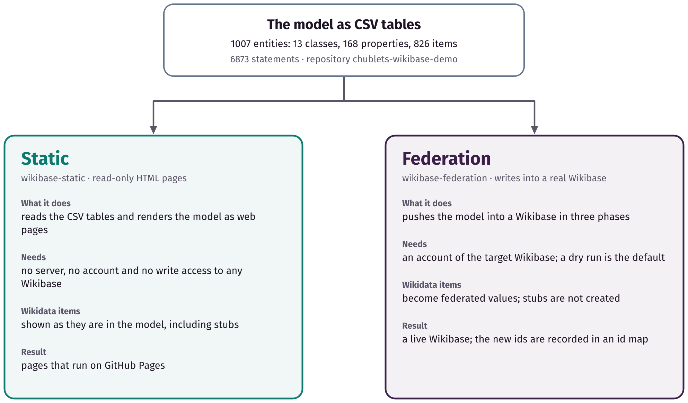
Caption
One model, two routes. The model is kept as CSV tables (13 classes, 168 properties, 826 items, 6873 statements). wikibase-static renders it as read-only HTML pages that need no server and no account; wikibase-federation writes it into a real Wikibase and records the new ids.


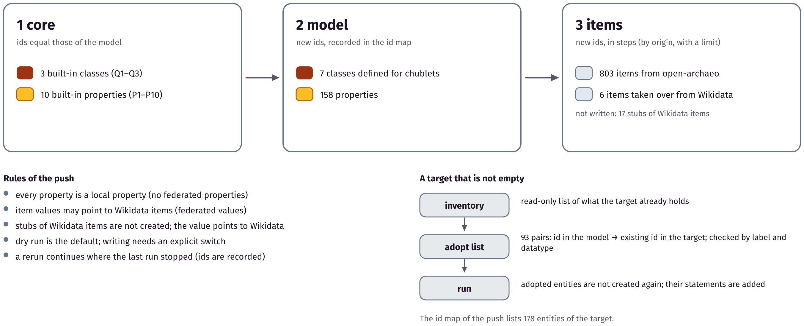
Caption
Writing the model into a real Wikibase in three phases: core (3 built-in classes and 10 built-in properties), model (7 classes defined for chublets and 149 + 9 properties) and items (from open-archaeo and Wikidata; stubs of Wikidata items are not written). All properties are local, Wikidata items are federated values, and a dry run is the default. If the target is not empty, an inventory leads to an adopt list (93 pairs) that maps model ids onto existing entities before the run.

Four-step pipeline
Ingest, Model, Curate & Link, Export & Publish.

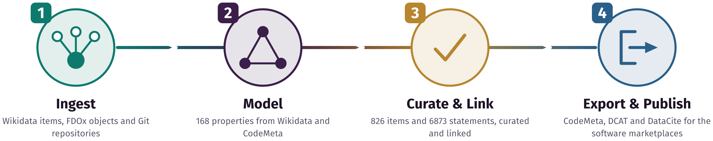
Caption
The four steps of the chublets pipeline as a chain: Ingest (Wikidata items, FDOx objects and Git repositories), Model (168 properties from Wikidata and CodeMeta), Curate and link (826 items and 6873 statements) and Export and publish (CodeMeta, DCAT and DataCite for the software marketplaces).


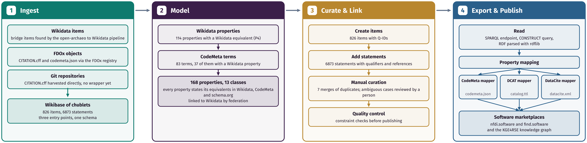
Caption
The four steps of the chublets pipeline. Ingest brings Wikidata items, FDOx objects and Git repositories into the Wikibase (826 items, 6873 statements). Model fixes the schema of 168 properties and 13 classes. Curate and link creates items, adds statements, merges duplicates (7 merges in the demo) and checks quality. Export and publish maps the data to CodeMeta, DCAT and DataCite for the software marketplaces.


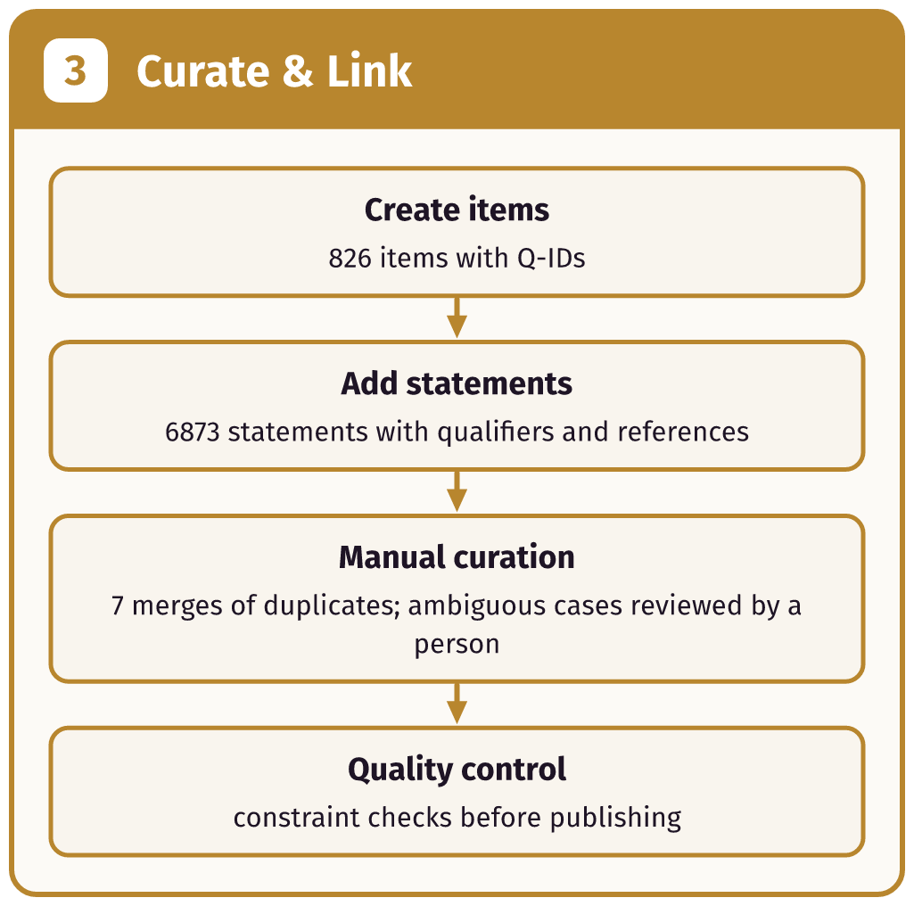
Caption
Step 3, Curate and link: items are created (826), statements added (6873), duplicates merged (7 in the demo) and the result is checked before publishing.


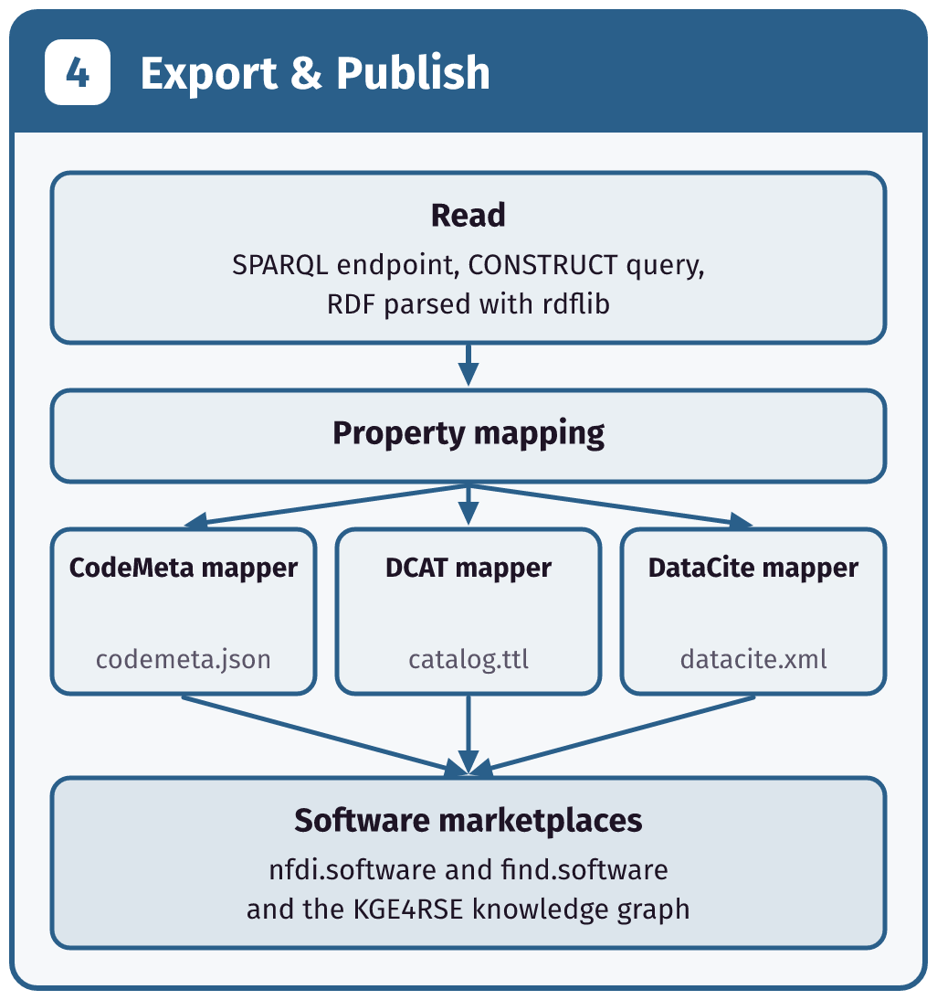
Caption
Step 4, Export and publish: the Wikibase is read with SPARQL, the properties are mapped, and CodeMeta, DCAT and DataCite files are produced for nfdi.software, find.software and the KGE4RSE knowledge graph.


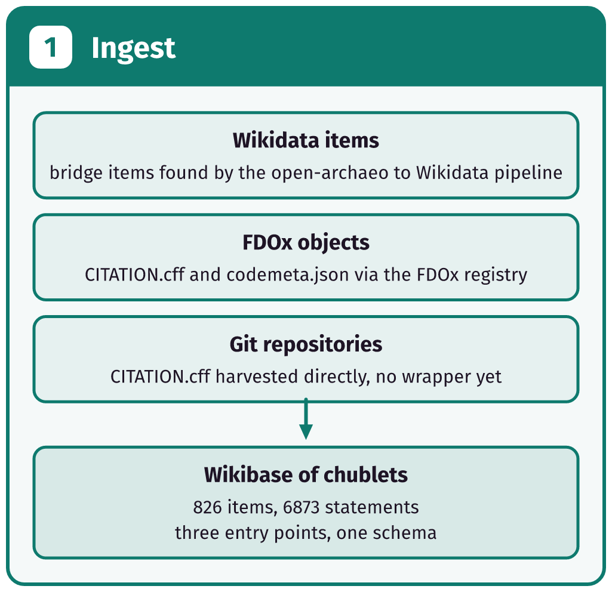
Caption
Step 1, Ingest: Wikidata items, FDOx objects and Git repositories (CITATION.cff) enter the same Wikibase schema (826 items, 6873 statements in the demo).


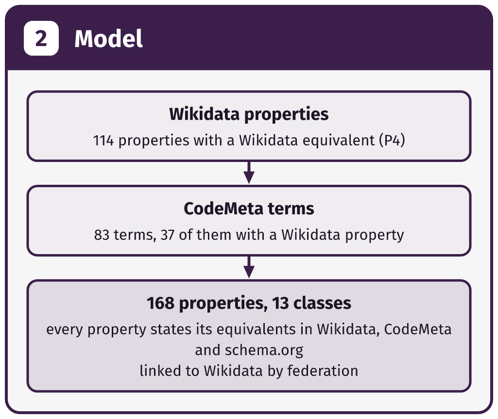
Caption
Step 2, Model: 114 properties with a Wikidata equivalent and 83 CodeMeta terms give the schema of 168 properties and 13 classes.


Caption
The badge of step 1, Ingest, for slide corners and navigation.


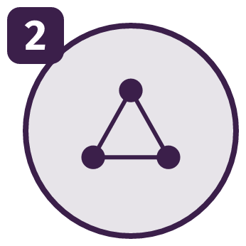
Caption
The badge of step 2, Model, for slide corners and navigation.


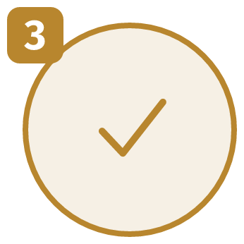
Caption
The badge of step 3, Curate and link, for slide corners and navigation.


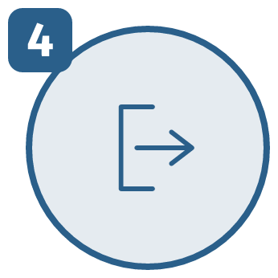
Caption
The badge of step 4, Export and publish, for slide corners and navigation.

FAIR4RS
How the model meets Findable, Accessible, Interoperable and Reusable.

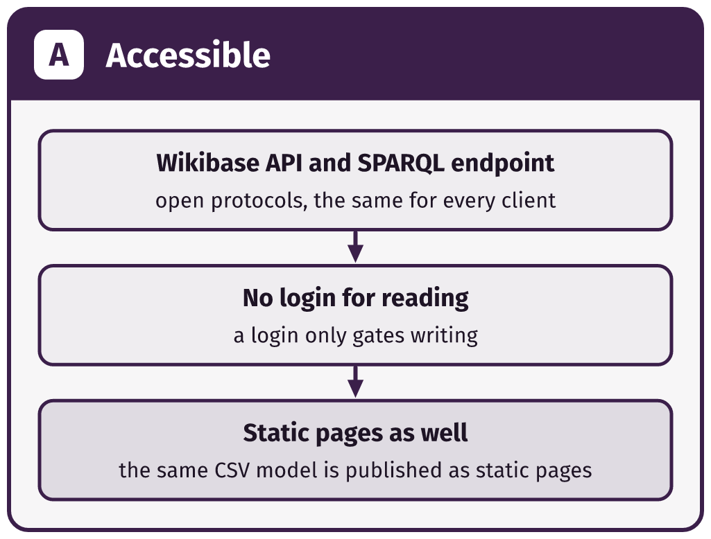
Caption
Accessible: the Wikibase API and the SPARQL endpoint can be read without a login; a login only gates writing. The same CSV model is also published as static pages.


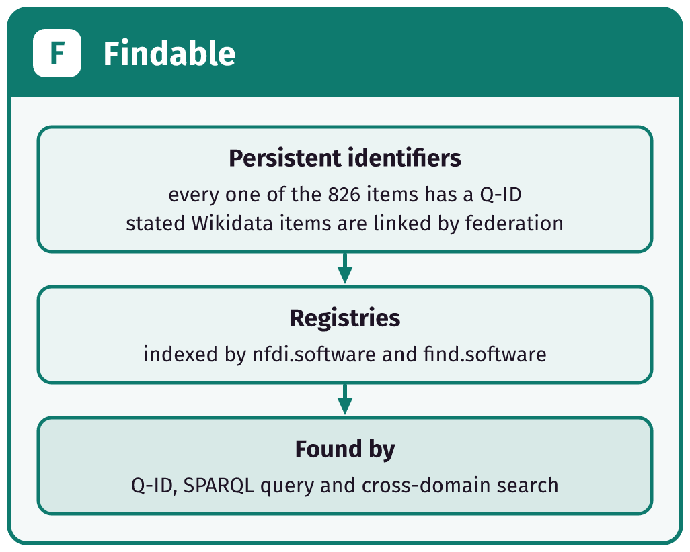
Caption
Findable: each of the 826 items has a persistent Q-ID; the registries nfdi.software and find.software index the chublets.


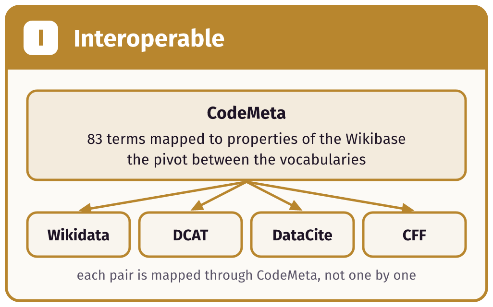
Caption
Interoperable: CodeMeta (83 terms mapped to properties of the Wikibase) is the pivot between Wikidata, DCAT, DataCite and CFF, so the vocabularies are not mapped pair by pair.


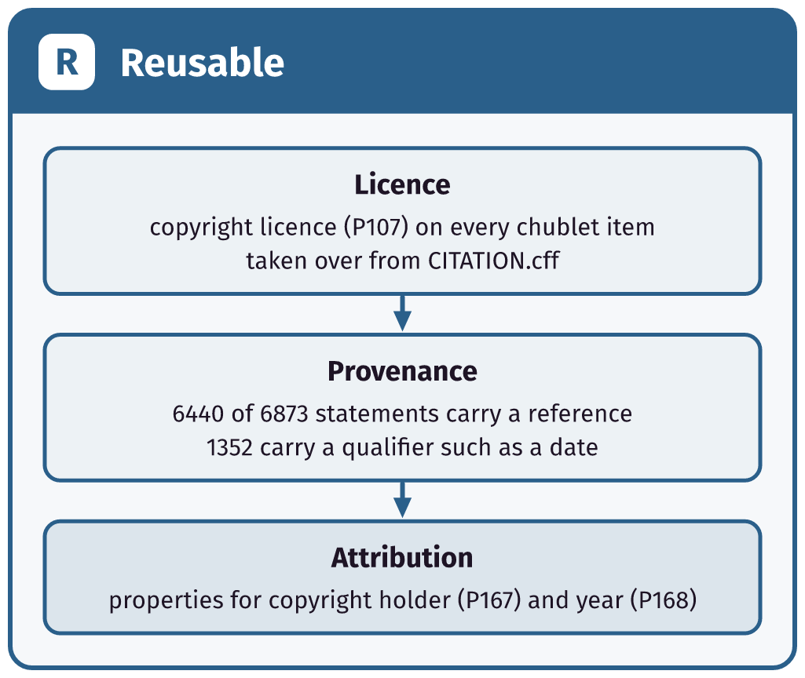
Caption
Reusable: the copyright licence (P107) is stated on the chublet items, and 6440 of 6873 statements carry a reference (1352 a qualifier, for example a date).


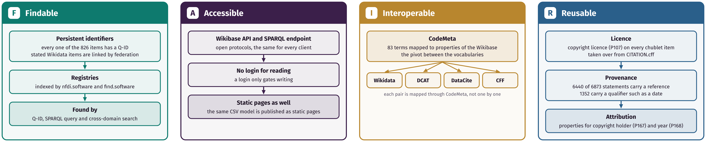
Caption
How the chublets Wikibase meets the four FAIR principles. Findable: each of the 826 items has a persistent Q-ID and is indexed by nfdi.software and find.software. Accessible: the Wikibase API and SPARQL endpoint are open for reading. Interoperable: CodeMeta (83 terms mapped) is the pivot between Wikidata, DCAT, DataCite and CFF. Reusable: licence and provenance are stated, 6440 of 6873 statements carry a reference.


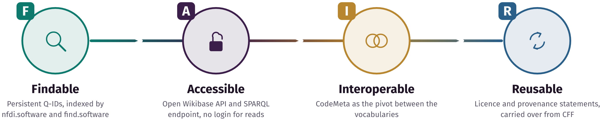
Caption
The four FAIR principles as a chain and how the chublets Wikibase meets them: Findable (persistent Q-IDs, indexed by nfdi.software and find.software), Accessible (open Wikibase API and SPARQL endpoint), Interoperable (CodeMeta as the pivot between the vocabularies) and Reusable (licence and provenance statements carried over from CFF).


Caption
The badge of the principle A, Accessible, for slide corners and navigation.


Caption
The badge of the principle F, Findable, for slide corners and navigation.


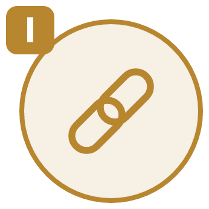
Caption
The badge of the principle I, Interoperable, for slide corners and navigation.


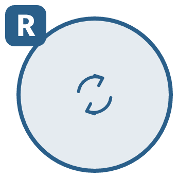
Caption
The badge of the principle R, Reusable, for slide corners and navigation.

open-archaeo workflow
From the open-archaeo list to Wikidata.

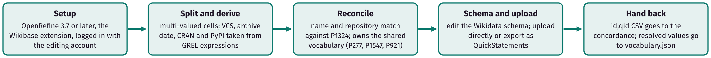
Caption
The OpenRefine route of the open-archaeo Wikidata session: set up, split and derive values, reconcile (which owns the shared vocabulary), edit the schema and upload, and hand the identifiers and Q-IDs back to the concordance.


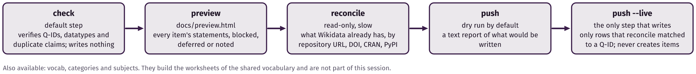
Caption
The Python route of the open-archaeo Wikidata session: check, preview, reconcile and a dry-run push; only `push --live` writes, and only rows that reconcile has matched to a Q-ID, so it never creates items.


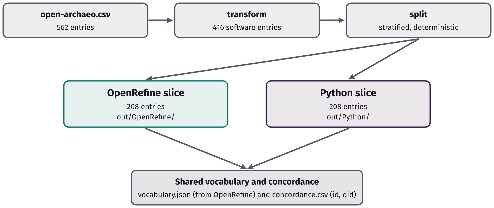
Caption
How open-archaeo is split for the Wikidata import. The 416 software entries of the 562 entries of open-archaeo.csv are split in a stratified, deterministic way into two halves of 208 entries that do not overlap, one for the OpenRefine route and one for the Python route. Both routes share one vocabulary and one concordance of identifiers and Q-IDs.


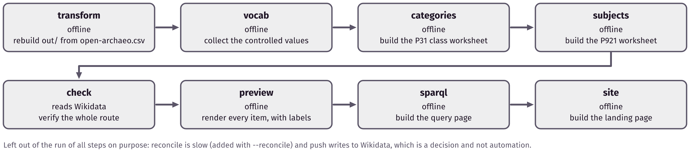
Caption
The eight steps that the command `all` of the open-archaeo Wikidata tool runs, in order. Only `check` reads Wikidata. Reconcile (slow) and push (writes) are not part of `all` on purpose. The steps are read from the vendored copy of py/wikidata/main.py of the open-archaeo repository.

Architecture and talk
The whole system at a glance, and the closing slide.

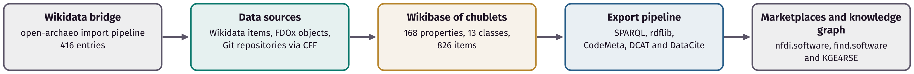
Caption
Architecture of chublets.software from the sources to the marketplaces. The open-archaeo import pipeline (416 entries) brings software into Wikidata; Wikidata items, FDOx objects and Git repositories are the data sources of the Wikibase of chublets (168 properties, 13 classes, 826 items), whose data are exported with SPARQL and rdflib as CodeMeta, DCAT and DataCite to nfdi.software, find.software and the KGE4RSE knowledge graph.


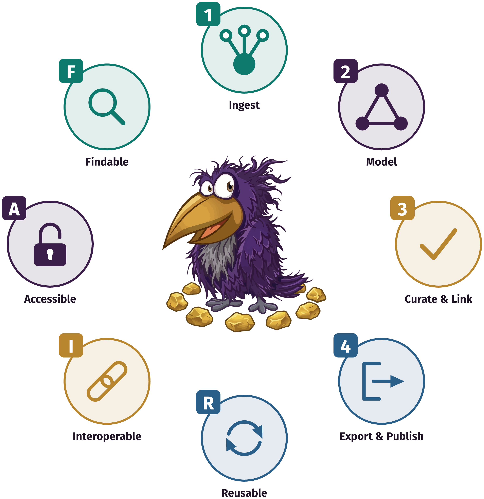
Caption
The four steps of the chublets pipeline (Ingest, Model, Curate and link, Export and publish) and the four FAIR principles as a ring of eight badges around the chublets raven with its nuggets, for the closing slide of a talk.